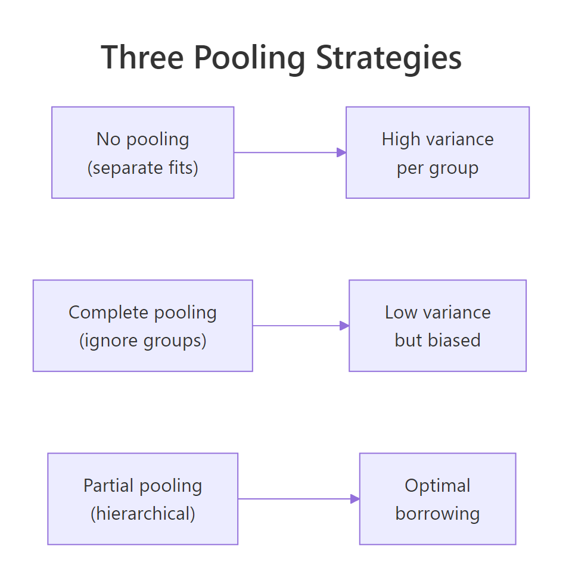
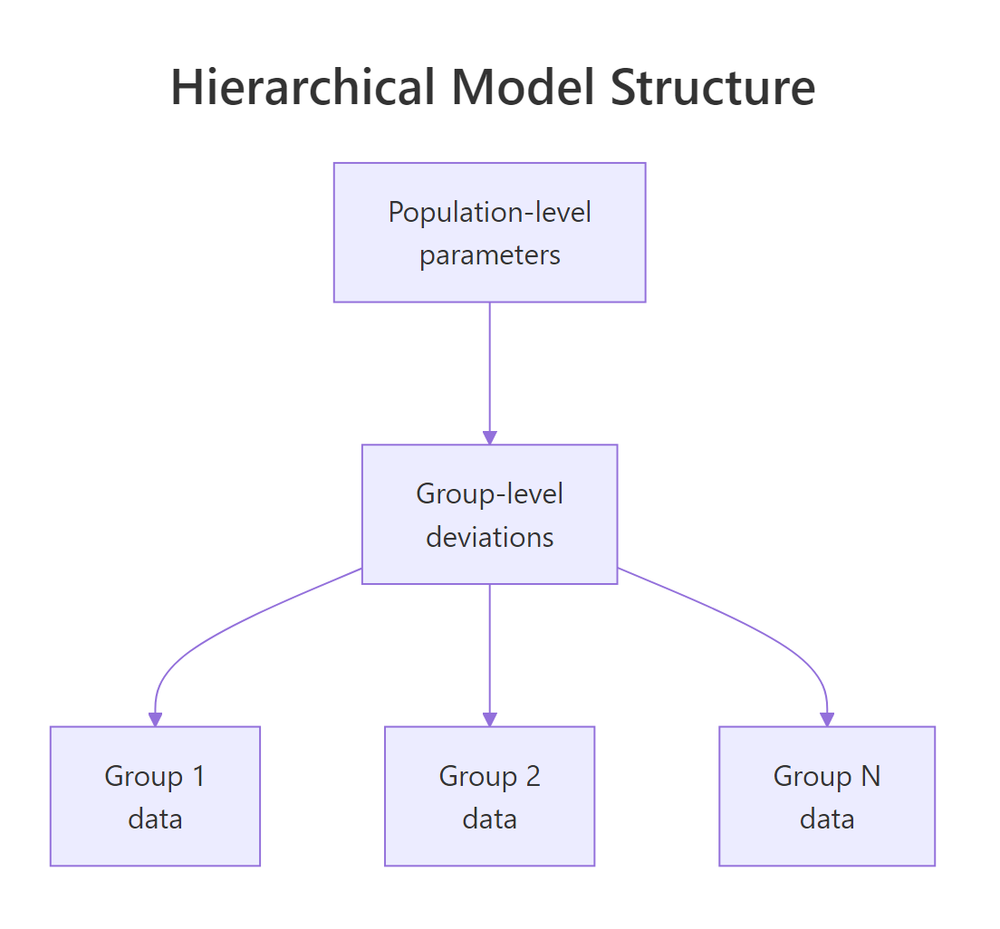

Bayesian Hierarchical Models in R: The Trick That Borrows Strength Across Groups
Schools, hospitals, customers, regions, sales reps. Real datasets are full of groups whose averages are related but not identical. Fitting one model per group ignores what they share; fitting one pooled model across all groups ignores what makes them different. A hierarchical Bayesian model fits both at once: a population-level effect plus per-group deviations, with each group's posterior pulled toward the population mean by an amount that depends on how much data the group has. The "borrowing strength" trick lets small groups inherit information from larger ones without large groups being held back.
What problem do hierarchical models solve?
Imagine you measure customer satisfaction in 50 stores. Some stores have 500 customers each; others have only 5. You want to estimate the typical satisfaction in each store.
Two naive approaches fail. The first is no pooling: fit a separate average for each store. The 500-customer stores get reliable estimates; the 5-customer stores have huge standard errors and unreliable averages.
The second is complete pooling: ignore stores entirely and use one global average. You lose all the store-to-store variation.
Hierarchical models do partial pooling. Each store's estimate is a weighted average of its own data and the population mean, with the weight depending on the store's sample size. Stores with lots of data are pulled only slightly toward the population mean; stores with little data are pulled heavily. The resulting per-store estimates are more accurate on average than either no pooling or complete pooling.
Below is a hierarchical Bayesian model on mtcars with cyl as the grouping variable. Each cyl group has its own intercept, but the intercepts are pulled toward a shared population mean.
Walk through what changed from a flat regression. The formula mpg ~ wt + (1 | cyl) has the standard wt term but adds (1 | cyl), which is brms shorthand for "fit a separate intercept for each level of cyl, with all the cyl intercepts drawn from a common population distribution."
The summary now has two sections. "Population-Level Effects" reports the population-average intercept and the slope on wt. "Group-Level Effects" reports the standard deviation across the cyl groups' intercept deviations.
The population intercept is 34.10 mpg with credible interval [29, 38.7]. That is the average across cyl groups. The wt slope is -3.02, the average effect of weight on mpg. The group-level sd is 2.75, meaning cyl groups differ in their intercepts by a typical 2.75 mpg.
To see the actual per-group intercepts, use ranef().
Walk through the per-group output. Each row is one cyl level. The Estimate is the per-group intercept deviation from the population mean. So the cyl=4 typical mpg is 34.10 + 1.92 = 36.02; cyl=6 is 34.10 - 0.55 = 33.55; cyl=8 is 34.10 - 1.69 = 32.41.
The credible intervals on each deviation are wide for the small groups. The cyl=4 group has only 11 cars; its deviation is 1.92 with interval [-1.20, 5.39]. The hierarchical model has shrunk this estimate toward the population mean (zero deviation) compared to what no-pooling would give.

Figure 1: No pooling fits each group separately and produces high-variance per-group estimates. Complete pooling ignores groups and produces low-variance but biased estimates. Partial pooling (hierarchical) finds the optimal balance, shrinking small groups more than large ones.
factor(cyl) as a fixed effect fits each group's intercept independently (no pooling). A hierarchical model with (1 | cyl) fits all groups jointly with shared shrinkage (partial pooling). The latter is more accurate when groups are similar enough to share information.Try it: Compute the marginal posterior for cyl=4's actual intercept (population intercept plus deviation, not just the deviation). Report median and 95% credible interval.
Click to reveal solution
The full intercept for cyl=4 is centred on 36.02 mpg with 95% credible interval [33.45, 38.71]. This is the typical mpg for a 4-cylinder car at zero weight, propagating both population-level uncertainty and group-level uncertainty.
How do partial pooling, no pooling, and complete pooling differ?
The differences are clearest with a numeric demonstration. Below we fit the same data three ways and compare per-group means.
Walk through the comparison. The "observed_mean" row is the raw average mpg per cyl group. The other rows are model-implied intercepts (typical mpg at zero weight, which is hypothetical extrapolation but reveals the pooling pattern).
No pooling gives intercepts of 36.3, 28.9, 25.9 across the three groups. Complete pooling forces all three to the same value 37.3. Partial pooling gives 36.0, 33.6, 32.4: less spread than no pooling, more spread than complete pooling. The partial-pooling estimates are pulled toward the population mean by an amount inversely proportional to each group's sample size.
That is the trade-off in numbers. With more groups or fewer observations per group, the partial-pooling shrinkage gets stronger. With many observations per group, partial pooling barely differs from no pooling.
lme4::lmer() does the same thing for Gaussian outcomes. The Bayesian version through brms gives you the full posterior plus proper uncertainty propagation between levels, which lmer() does not.Try it: For the cyl=8 group (14 cars in mtcars), compute how far partial-pooling shrunk the intercept toward the population mean compared to no-pooling.
Click to reveal solution
No-pool was 8.23 below the population mean; partial-pool was only 1.69 below. The hierarchical model shrunk the cyl=8 estimate by about 80% toward the population. With 14 cars in the group, this is a lot of shrinkage. Smaller groups would be shrunk even more aggressively.
How do I fit a hierarchical model in brms?
The brms formula syntax for hierarchical models follows lme4 conventions. (1 | group) adds a random intercept per group. (1 + x | group) adds random intercepts and random slopes for x per group, with correlation between them estimated. (0 + x | group) adds random slopes without random intercepts.
Walk through the syntax. (1 | cyl) is the simplest case: each cyl gets its own intercept deviation, with all deviations drawn from Normal(0, sd_intercept) where sd_intercept is itself estimated.
(1 + wt | cyl) says each cyl gets its own intercept and its own slope on wt. The two are jointly distributed with correlation cor (also estimated). For mtcars with only 3 cyl groups, this is borderline; brms warns about divergent transitions, which is why we set adapt_delta = 0.95.
(0 + wt | cyl) would give random slopes but no random intercepts, sharing the population intercept across groups.
For larger studies with more groups (say 50 schools or 100 hospitals), random slopes are usually identifiable. For datasets with very few groups (3 here), random slopes can be too data-hungry to fit reliably.

Figure 2: A hierarchical model has population-level parameters at the top, group-level deviations in the middle, and observations within each group at the bottom. Each level inherits the structure of the level above and adds its own variability.
prior_summary() for the random-effect SD prior. brms defaults to a half-Student-t with the data's standard deviation as the scale, which is reasonable. For very small datasets or unusual outcomes, override with prior(student_t(3, 0, 5), class = "sd") or similar.Try it: Fit the random-slope model (mpg ~ wt + (1 + wt | cyl)) and read out the correlation between random intercepts and slopes.
Click to reveal solution
The correlation between cyl-level intercept deviations and wt slope deviations is centred on -0.10 with 95% credible interval [-0.93, 0.88]. The interval covers most of [-1, 1], meaning the data does not pin the correlation down at all. With only 3 groups, this is expected; correlations between random effects need many groups to identify.
How do I read group-level vs population-level outputs?
Two layers of output. Population-level effects are the typical effect across the population of groups. Group-level effects are the per-group deviations.
For a hierarchical regression y ~ x + (1 | g), the model is:
- Population:
y_typical = b_Intercept + b_x * x(the regression a "typical group" would have) - Group g:
y_g = (b_Intercept + r_g) + b_x * x(each group gets its own intercept)
Where r_g is the group-g intercept deviation drawn from Normal(0, sd_Intercept).
Walk through how to read it. "Group-Level Effects" reports the standard deviation of group-level intercepts, not the per-group estimates themselves. The estimate of 2.75 says cyl groups differ in their typical mpg by about 2.75 mpg.
"Population-Level Effects" reports the population-average intercept and slope. These are what you would report if you wanted to make a statement about cars in general (averaged over cyl groups).
For per-group estimates, use ranef() or coef():
Walk through the difference. ranef() returns the deviations from the population mean. coef() returns the full per-group intercepts (population mean plus deviation). Both have credible intervals; coef() is what you would report as "the typical mpg by cyl group."
posterior_predict() with re_formula = NA. This averages out the group-level uncertainty rather than picking a specific group.Try it: Use coef() to report the per-group typical mpg with 95% credible intervals.
Click to reveal solution
A clean per-group intercept table. The cyl=4 group has the highest typical mpg (36) and cyl=8 the lowest (32). Credible intervals overlap somewhat between adjacent groups, reflecting the moderate amount of partial pooling.
How do I diagnose a hierarchical fit?
Hierarchical models add new failure modes. The big one is divergent transitions, often caused by a "funnel" geometry where the random-effect variance can be very small (groups are similar) or very large (groups are different). The standard fix is the non-centred parameterisation, which brms uses by default for random effects but the geometry can still bite.
Walk through what to look at. The Rhat for the random-effect sd is 1.00 (converged); Bulk_ESS at 1185 is acceptable. Random-effect SDs often have lower ESS than population-level coefficients because they trade off with the deviations themselves.
Zero divergent transitions: the chain explored the funnel without hitting numerical issues. If divergences had been non-zero, raise adapt_delta to 0.95 or 0.99.
The grouped density overlay shows whether the model fits each group. If one panel has the simulated densities visibly off the observed density for that group, the model is missing group-specific structure.
prior(normal(0, 5), class = "sd")) or treat the groups as fixed effects instead.Try it: Compare pp_check(fit_hier, ndraws = 50) (pooled across groups) with pp_check(fit_hier, type = "dens_overlay_grouped", group = "cyl", ndraws = 50). Which one shows the per-group fit?
Click to reveal solution
Per-group simulated means closely match observed means. The hierarchical model captures the cyl-level differences. The grouped PPC visual would show the same: each panel's simulated density tracks the observed density for that group.
When does a hierarchical model beat a flat one?
Five situations where hierarchical wins.
The first is uneven group sizes. If your groups vary from 5 to 500 observations, hierarchical shrinkage gives the small groups stable estimates while leaving the large groups largely unchanged.
The second is small per-group sample size. With 5 to 20 observations per group, no-pooling estimates have high variance. Partial pooling reduces it dramatically.
The third is many groups. With 50 or 100 groups, the random-effect SD is well-identified and the shrinkage is reliable. With 3 groups, partial pooling is fragile and you should consider treating groups as fixed effects.
The fourth is predicting to new groups. A hierarchical model has a natural way to predict for a new group not in the training data: marginalise over the random-effect distribution. A no-pooling fit cannot do this at all.
The fifth is propagating uncertainty into the population effect. The population-level intercept's credible interval includes the variability across groups, which is what you want when reporting an "average effect across groups."
When not to use hierarchical: very few groups (under 5), groups that are deeply different in nature (a "store" with 1000 observations and another with 5 measuring different products entirely), or when group identity is part of what you want to estimate (in which case fixed-effect dummies are more direct).
prior_summary() and run a sensitivity check on the SD prior.Try it: For mtcars2, refit with both mpg ~ wt + (1 | cyl) and mpg ~ wt + factor(cyl). Compare the per-cyl intercepts.
Click to reveal solution
The hierarchical model produces less spread between cyl groups (32.4 to 36.0) than the fixed-effect model (28.9 to 36.3). With 3 groups and ~10 observations each, partial pooling pulled the per-group intercepts toward the population mean, and the hierarchical estimates are likely closer to the truth on out-of-sample data.
Practice Exercises
Exercise 1: Random slopes for a customer-level effect
Suppose you have customer-level data with each customer's spending on different products. Fit a model with spend ~ price + (1 + price | customer_id) so each customer has their own price sensitivity. Use a small simulated dataset.
Click to reveal solution
The random-intercept sd (6.2) and random-slope sd (1.97) are well-identified with 50 customers. The intercept-slope correlation is small and negative (-0.16). The hierarchical structure correctly captured the customer-level price-sensitivity heterogeneity we built into the simulation.
Exercise 2: Predicting for a new group
For fit_hier, predict the typical mpg for a hypothetical "cyl=12" car (a group not in the training data). Use posterior_predict with re_formula = NA to marginalise over the random-effect distribution.
Click to reveal solution
The predicted mpg for a hypothetical new cyl group at wt=3 is centred at 25, with credible interval [16.7, 32.3]. The interval is wider than for known groups because it includes uncertainty about the new group's intercept deviation.
Exercise 3: LOO comparison of pooling strategies
Compare fit_hier (partial pooling), fit_no_pool (no pooling), and fit_complete (complete pooling) via LOO. Report which one wins.
Click to reveal solution
Hierarchical (partial pooling) wins, but not decisively over no-pooling (gap of 0.6 with se 1.4, ratio under 1). Complete pooling is clearly worst (gap 3.2 with se 2.7, ratio 1.2). With only 3 groups in mtcars, partial and no pooling are similar; the win for hierarchical would be larger with more groups and smaller groups.
Summary
Bayesian hierarchical models share information across groups via partial pooling. brms makes this one extra term ((1 | group) or (1 + x | group)) on the formula.
| Step | What you do | brms function | |||
|---|---|---|---|---|---|
| 1 | Identify grouping structure | factor(group_var) |
|||
| 2 | Add random effects to formula | `(1 \ | g), (1 + x \ |
g), (0 + x \ |
g)` |
| 3 | Read population and group levels | summary(fit), ranef(), coef() |
|||
| 4 | Check for divergences | rstan::get_num_divergent(fit$fit) |
|||
| 5 | Use grouped PPC | pp_check(fit, type = "dens_overlay_grouped", group = ...) |
|||
| 6 | Compare to flat model with LOO | loo_compare(loo(hier), loo(flat)) |
Use hierarchical models when groups have related but different effects, when sample sizes are uneven, when you want stable per-group estimates, or when you need to predict to new groups. Avoid them with very few groups (under 5) or when groups are entirely different in nature.
References
- Gelman, A., Hill, J. Data Analysis Using Regression and Multilevel/Hierarchical Models. Cambridge University Press, 2007. The standard textbook.
- Gelman, A. et al. Bayesian Data Analysis, 3rd ed. Chapman & Hall, 2013. Chapters 5 and 15 cover hierarchical models.
- McElreath, R. Statistical Rethinking, 2nd ed. CRC Press, 2020. Chapter 13 on multilevel models with brms.
- Bürkner, P. brms documentation: random effects. paulbuerkner.com/brms.
- Stan Development Team. "Stan User's Guide: Reparameterization for hierarchical models." mc-stan.org/docs/stan-users-guide.
Continue Learning
- Multilevel Models in R With brms, the next post. Same hierarchical idea applied to multi-level designs (students within classrooms within schools).
- Bayesian Logistic Regression in R, the previous post. Hierarchical models extend naturally to binary outcomes via
family = bernoulli("logit")plus random effects. - Choosing Priors in R, the post that covers priors on random-effect SDs.